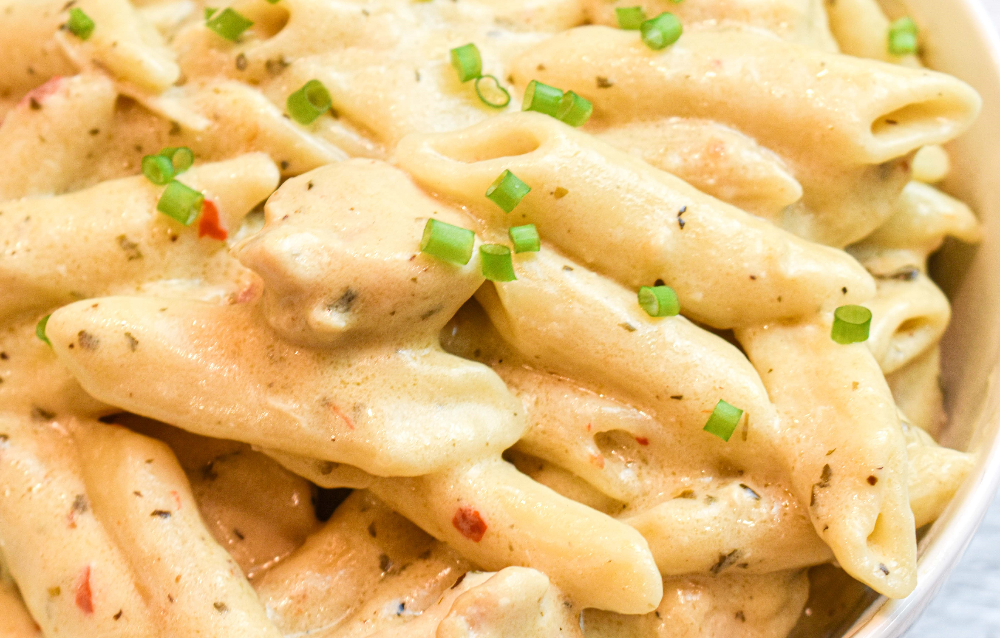

Odin Recipes
Crockpot Buffalo Wild Wings Garlic Parmesan Chicken

Description
Easy and tasteful family dinner with a kick!
Ingredients
- 2-3 Chicken breast
- Buffalo Wild Wings parmesan garlic sauce
- Milk(Whole)
- Cream Cheese (Cubed)
- Cut permesan cheese
- Pasta
Directions
- Spray/Line crockpot.
- Add chicken breast.
- Add whole bottle of Buffalo Wild Wings parmesan garlic sauce.
- Fill bottle of Buffalo Wild Wings parmesan garlic sauce with milk and shake it all up and add to crockpot.
- Add cubed block of cream cheese
- Add parmesan, salt, and pepper
- Cook on Low for 8 hours or on High for 4 hours.
- shred and serve with noodles or rice
Recipe by: Kassidy Montano